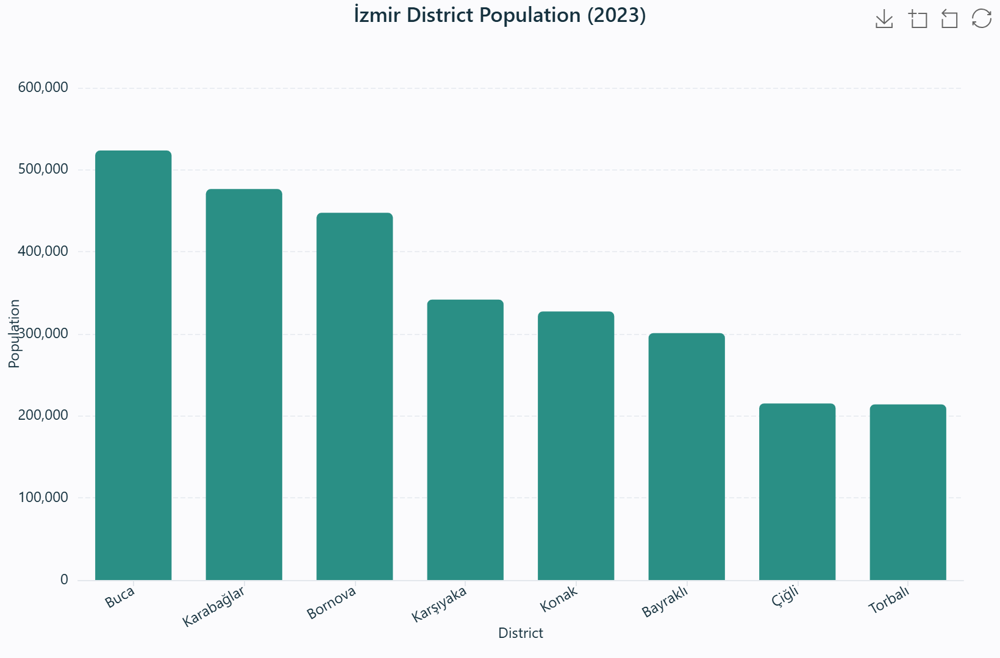

The workhorse of quantitative comparison. A bar chart encodes a numeric value as position along a common scale — the single most accurately-perceived visual channel in Cleveland & McGill's (1984) ranking of graphical perception.

İzmir district population (2023) — one bar per district, height encodes population on a common axis.
Real data. Buca 523,487 · Karabağlar 476,500 · Bornova 447,553 · Karşıyaka 341,857 · Konak 327,300 · Bayraklı 300,949 · Çiğli 215,172 · Torbalı 214,059. Source: TÜİK — Address-Based Population Registration System (ADNKS), 2023.
When to use
Whenever the question is "which category is larger, and by how much": comparing one numeric measure across districts, land-use classes, or periods. Prefer it over a pie chart once categories exceed a handful. Use grouped bars (Group field) to add a second categorical dimension, and stacked bars (checkbox) to show additive composition.
What data you need
A categorical field for X and a numeric field for Y — or just the category plus a count aggregation. A Group field optionally splits into coloured series; an aggregation (sum / mean / …) is applied per category.
How to read it
Compare the tops of the bars on the shared axis — the distance between two bar tops is the difference in value. In grouped bars, compare within a cluster and across clusters; in stacked bars, the total is the top edge and each segment is a part.
Interpretation & applications
Spot the largest and smallest category, dominance, or balance. In planning: population by district, budget by department, area by land-use class. Always check the axis origin — a non-zero baseline exaggerates differences, so read the values, not just the visual gap.
Field bindings & controls
| Binding | Role | Notes |
|---|
| X | Category field | Categorical (or numeric binned) |
| Y | Value field | Numeric; aggregated with the chosen aggregate |
| Group | Series field | Splits into coloured series; enables stacked bars |
| Aggregate | count · sum · mean · median · min · max | Applied per category |
| Top-N / Sort | N + order | Collapses remainder into "Other" |
Engine support
ECharts ✓ · Plotly ✓ · Vega-Lite ✓ · Matplotlib ✓ — animation (play axis) and reference overlays (mean / median / ±1σ / IQR / target) both available.